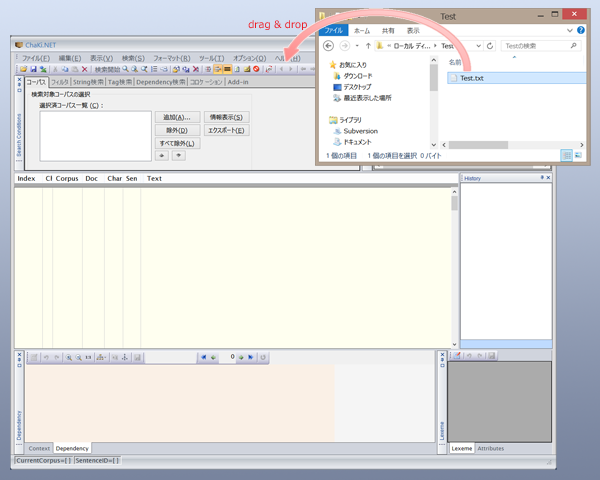
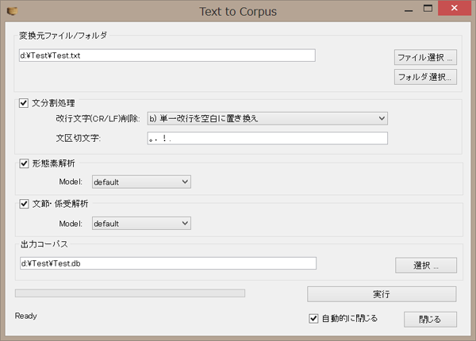

コーパスを作成する>全自動インポート
ChaKi.NETをインストールしたあと最初に行わなければならないのが、コーパスソースファイルの データベースへのインポート作業です。ここで、コーパスソースファイルとは、
- ChaSen, MeCab形式の形態素解析済みテキストファイル
- Cabocha形式の係り受け解析済みテキストファイル
- 平文形式のテキストファイル(予定）
の３種類いずれかのテキストファイルをいいます。 これらテキストファイルのエンコードには、SJISまたはUTF-8が使用可能です。 UTF-8の場合、Unicodeによる多言語のデータを含むことができます。
ChaKiでは、これらのコーパスソースファイルを簡単にSQLite Databaseとしてインポートする手順を用意しています。 ソースファイルまたはファイル群の存在するフォルダをWindowsエクスプローラ等からChaKiのウィンドウ上へ マウスによりドラッグ＆ドロップします。

※ パネル類の上へはドラッグできません。（ドロップできない領域上ではカーソルが禁止表示になります。）
※ ChaKi.NETを管理者権限で起動していると、Windowsのセキュリティ制限によりオブジェクトをドラッグ＆ドロップで 受け取ることができません。
ドラッグ＆ドロップが正常にできると、下図のようなツールが立ち上がります。

"Go/実行"ボタンをクリックすると、指定した処理が自動的に行われ、データベース（コーパス）が作成されます。
中間ファイル、デフォルトの出力コーパスは、元ファイル・フォルダの直下に"out"という名称のフォルダを 作成し、そこに格納するようになっていますので、その場所が書き込み可能となっている必要があります。この"out"フォルダが既にあって重要なファイルを含んでいる場合はご注意ください。本ツールでは、"out"フォルダにある拡張子".chasen", ".mecab", ".cabocha", ".txt" であるファイルを毎回削除します（削除前には確認ダイアログを出します）。
実行後、"Close/閉じる"ボタンをクリックするか、"auto close/自動的に閉じる"をチェックしていると、 このツールは終了し、ChaKiのCorpusパネルに新しく作成されたコーパスがロードされ、検索可能状態になります。
※ Tips
- Dependency Panelなどの編集パネルにてコーパスが編集ロックされていると、CreateCorpusの段階でエラーとなります。編集中のパネルの編集ボタンをクリックし、編集モードを抜けてから再実行してください。同じコーパスを複数回作成しようとしたときなどに起きやすい現象です。
- MecabとCabochaの文字コードが異なっていると、"Cabocha error: ... Incompatible charset: MeCab charset is UTF-8, Your charset is CP932"などとエラー表示されます。この場合はコーパスが空となり、コーパス読み込み時にエラーが発生します。mecabrc, cabocharcの文字コードを確認するか、どちらかを再インストールしてください。
- Cabochaの文字コードとChabocha Modelの文字コードが異なっていると、"Cabocha error: ... model charset and dependency parser's charset are different: UTF8 != CP932"などとエラー表示されます。この場合も同様にコーパスが正しく作成されません。mkmodel.batを再実行するか、Cabochaを再インストールしてください。
- mecabrc, cabocharc, cabochaのmodel/charset-file.txt の内容が正しい文字コードになっているにもかからわず上記のエラーが出る場合、WindowsのUAC仮想フォルダにリダイレクトされたファイルが残っている可能性があります。"c:￥users￥<user-name>￥AppData￥Local￥Virtual Store￥Program Files (x86)￥..."に古い設定ファイルやモデルファイルが残っていないか確認してください。mkmodel.batを管理者以外から実行した場合などにこの状態になります（Windows UACでは、リダイレクトファイルがオリジナルよりも優先されます。）